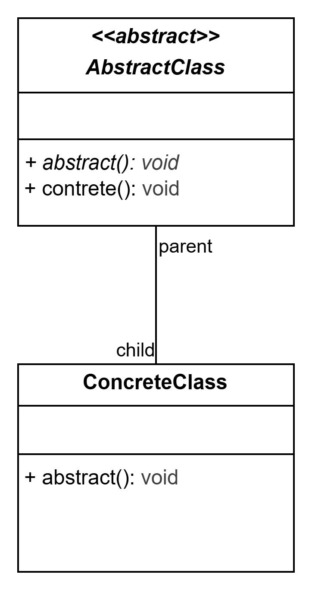

Exercise 7: Birds of a Feather 2
In this exercise, you'll apply the use of abstract class and method where appropriate.
Brief
In Exercise 5, we implemented some birds such as Parrot and Penguin. However, some of these classes should not directly be initialized. Using what you learnt about abstract classes in Unit 07, determine which class should be abstract and convert them to abstract.
You will be provided with the suggested solution to Exercise 5 as a starting point.
Task 0: Accept the Assignment
Accept the assignment using the GitHub Classroom link provided.
Task 1: Abstract demo() method & Abstract Class
Implement the an method demo that must be available in all type bird. It should demonstrate all the abilities of the bird.
For example, the demo method for Parrot should call all of the following methods:
- lay_egg()
- walk()
- fly()
- mimic()
Open the classes.drawio file using draw.io or the ‘Draw.io Integration’ extension in VS Code. Complete the class diagram for the all of the classes, specifying its attributes, methods and relationship. Identify which classes should be abstract and clearly mark abstract classes and methods in the diagram

Checkpoint: Correct diagram
Please confirm your class diagram with your teacher before starting on task 2.
Task 2: Refactor the Code
Refactor the provided code to use abstract classes:
- Use Python’s
abcmodule to define abstract base classes and abstract methods. - Ensure that all subclasses correctly implement the required abstract methods.
- The
Zooshould now utilize thedemomethod for all birds.